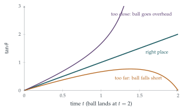

A fielder, who is perfectly placed to catch a ball struck by the batsman in a game of cricket, watches the ball in flight. Assuming that the ball is struck at the fielder’s eye level and is caught just in front of her eye, show that \(\frac{\mathrm{d}}{\mathrm{d}t}(\tan\theta)\) is constant, where \(\theta\) is the angle between the horizontal and the fielder’s line of sight.
In order to catch the next ball, which is also struck towards her but at a different velocity, the fielder runs at constant speed \(v\) towards the batsman. Assuming that the ground is horizontal, show that the fielder should choose \(v\) so that \(\frac{\mathrm{d}}{\mathrm{d}t}(\tan\theta)\) remains constant.
The hook
A ball is struck high into the outfield. A good fielder sets off at once and arrives just as it comes down. How? Nobody can solve the equations of projectile motion in their head in a fraction of a second, and in any case the fielder does not know the ball’s speed or angle. Yet fielders, and dogs catching frisbees, do it routinely.
In 1968 the physicist Seville Chapman proposed an answer, and this question proves it. If the fielder watches the angle of elevation \(\theta\) of the ball, and moves so that \(\tan\theta\) increases at a constant rate, she will arrive exactly where the ball lands. She needs no knowledge of physics, only the ability to notice whether the ball seems to be rising faster or slower than steadily. A hard prediction problem is replaced by a simple feedback rule.
Before you start
Put the batsman at the origin and the fielder at distance \(D\). If the ball is at \((x, y)\), what is \(\tan\theta\)?
The ball is at height \(y\) above the fielder’s eye, and at horizontal distance \(D - x\) in front of her (it is coming towards her). So \(\tan\theta = \frac{y}{D - x}\).
Working it through
Stage 1 The perfectly placed fielder
Let the ball have horizontal speed \(U\) and initial vertical speed \(W\), and let it land (at eye level) at time \(T\). Write \(x\), \(y\) and \(D\) in terms of \(U\), \(W\), \(T\), \(g\) and \(t\). Can you factorise \(y\)?
We have \(x = Ut\) and \(y = Wt - \frac12gt^2\), and the ball returns to eye level at \(T = \frac{2W}{g}\), where the fielder is: \(D = UT\). Since \(W = \frac12gT\), \[y = \tfrac12gt(T - t), \qquad D - x = U(T - t).\] The factor \(T - t\) cancels: \[\tan\theta = \frac{\frac12gt(T - t)}{U(T - t)} = \frac{g}{2U}\,t.\] So \(\frac{\mathrm{d}}{\mathrm{d}t}\tan\theta = \frac{g}{2U}\), a constant.■
Stage 2 The running fielder
Now the fielder starts at distance \(D_0\) and runs towards the batsman at speed \(v\), so her position is \(D_0 - vt\). She catches the ball at time \(T\). What is \(D_0\)? Repeat the calculation.
To catch the ball at time \(T\), she must be where it lands: \(D_0 - vT = UT\), so \(D_0 = (U + v)T\). Her horizontal distance from the ball is \(D_0 - vt - Ut = (U + v)(T - t)\), and again the factor cancels: \[\tan\theta = \frac{\frac12gt(T - t)}{(U + v)(T - t)} = \frac{g}{2(U + v)}\,t.\] So if she is running at the right speed, \(\tan\theta\) increases at a constant rate.
The question asks for the converse: if she runs so that \(\frac{\mathrm{d}}{\mathrm{d}t}\tan\theta\) is constant, will she catch the ball?
Suppose she runs at speed \(v\) and \(\tan\theta = \frac{\frac12gt(T - t)}{D_0 - (U + v)t}\) increases at a constant rate \(c\), so \(\tan\theta = ct\) (it is \(0\) at \(t = 0\)). Then \[\tfrac12g(T - t) = c\bigl(D_0 - (U + v)t\bigr) \quad\text{for all } t.\] Comparing the coefficients of \(t\) and the constant terms: \(\frac12g = c(U + v)\) and \(\frac12gT = cD_0\). Dividing, \(D_0 = (U + v)T\): exactly the condition to be at the landing point at time \(T\). So she should choose \(v\) to keep \(\tan\theta\) rising steadily, and then she catches the ball.■

Looking back
Look for a common factor. Both the height and the horizontal distance contained \(T - t\), and cancelling it made \(\tan\theta\) linear.
Prove the converse. Showing that the rule works (it leads to the catch) needed the reverse argument, comparing coefficients.
An invariant that is easy to perceive. A steady rise in \(\tan\theta\) can be judged by eye; the landing point cannot.
What’s really going on
Optical acceleration cancellation
Chapman’s rule is now called optical acceleration cancellation: the fielder moves so as to keep the “optical acceleration” \(\frac{\mathrm{d}^2}{\mathrm{d}t^2}\tan\theta\) at zero. If the ball’s image accelerates upwards, the ball will go over her head, so she backs away; if it decelerates, the ball will fall short, so she runs in (Figure 11.11.1). The strategy does not tell her where the ball will land, but it gets her there. It is a feedback control law, like the ones that steer guided missiles: missiles use proportional navigation, keeping the line-of-sight angle to the target constant, which is the sideways version of the same idea.
What fielders really do
Do real fielders use Chapman’s rule? Experiments in the 1990s, with cameras mounted on the heads of baseball outfielders, gave mixed results. Michael McBeath and colleagues argued in Science in 1995 that, for balls hit to one side, fielders run along curved paths that keep the ball’s image moving in a straight line across their field of view (a “linear optical trajectory”), which also leads them to the catch. Later work has suggested that both strategies, and a mixture of them, are used, and that fielders often do not run at constant speed. A 2004 study found that dogs catching frisbees follow paths consistent with the same optical rules. Whatever the details, the remarkable conclusion stands: catching does not require prediction, only the right feedback.
Seville Chapman’s “Catching a baseball”, published in the American Journal of Physics in 1968, is three pages long and contains essentially the calculation in this question. He noted that the strategy works only without air resistance, and that a real baseball’s trajectory is distorted by drag and spin, which would complicate things. Nevertheless, the idea that the brain uses simple invariants of the visual field to solve complicated control problems has become important in psychology and robotics.
The thinking skill
When a quantity is hard to predict, look for a related quantity that can be observed directly and that behaves simply exactly when things are on track.
Here the landing point was hard to predict, but the rate of change of \(\tan\theta\) was easy to monitor. At university this is the idea of feedback control, and of choosing an observable that encodes the information you need.
Try this next
Running backwards. If the ball will land behind the fielder’s starting position, show that she should run away from the batsman, and that the same rule applies.
Not \(\theta\) itself. Show that, for a perfectly placed fielder, \(\frac{\mathrm{d}\theta}{\mathrm{d}t}\) is not constant. Why is \(\tan\theta\) the right quantity to watch?
Eye level. If the ball is struck from a height \(h\) below the fielder’s eye level, is \(\tan\theta\) still linear in \(t\) for a well-placed fielder? (Assume she catches it at eye level.)
Air resistance. With linear air resistance, the horizontal velocity decays exponentially. Is \(\tan\theta\) still linear in \(t\) for a well-placed fielder?
Further reading
Seville Chapman, “Catching a baseball”, American Journal of Physics 36 (1968).
Michael McBeath, Dennis Shaffer & Mary Kaiser, “How baseball outfielders determine where to run to catch fly balls”, Science 268 (1995).
Dennis Shaffer et al., “How dogs navigate to catch Frisbees”, Psychological Science 15 (2004).